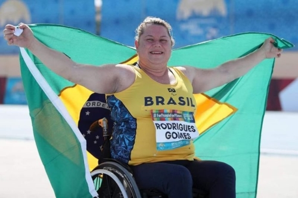
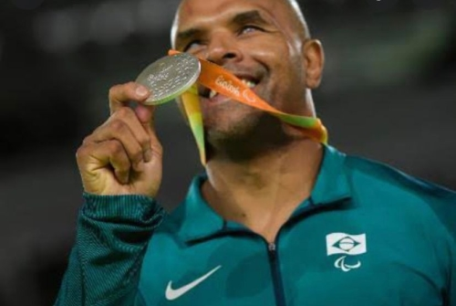
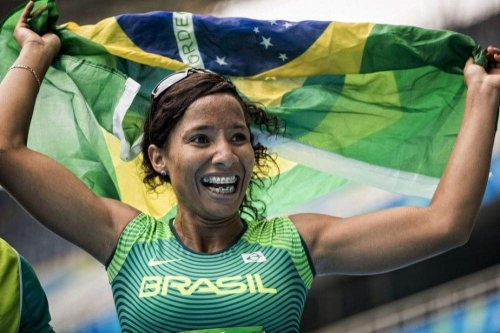

Em 1960 na Roma, surgiram as paralímpiadas, um evento esportivo com várias
modalidades para pessoas portadoras de deficiências. De quatro em quatro anos,
acontece este evento que se tornou conhecido mundialmente, e em 2021, o mesmo
ocorreu.
Nesta edição, vamos apresentar alguns dos atletas brasileiros que foram destaques
nas paralímpiadas.
Elizabeth Gomes
Começando por Elizabeth Gomes, ela é uma atleta paralímpica de atletismo e, aos
56 anos de idade, ainda consegue marcar recordes, como o de atingir 17,62m no
lançamento de disco da classe F52. Beth porta uma esclerose múltipla e, graças a
sua idade e sua deficiência, sofreu muito com o etarismo. Porém, com a sua
autoconfiança e ajuda de colegas, ela conseguiu vencer esse preconceito.
Ela nasceu em 1965 e, já aos 14 anos de idade, Elizabeth começou a jogar vôlei em
sua cidade natal. Entretanto, em 1993, ela foi diagnosticada com esclerose múltipla.
Ao saber de sua doença, Beth achou que sua carreira havia acabado, só que o
destino ainda sorriria para ela. Em 1996 entrou para o basquete em cadeira de
rodas e, no ano de 2012, entrou para o atletismo após ter um surto de esclerose em
2010. Infelizmente ela ainda teria outro surto, que a levaria a entrar para a categoria
F52 de arremesso de disco.

Antônio Tenório
Antônio Tenório da Silva é considerado o maior judoca Paralímpico da história. Ele
conquistou as 4 medalhas de ouro do Brasil na modalidade. Seu início no judô foi
aos oito anos de idade, mas um descolamento de retina ao ser atingido por uma
semente de mamona no olho esquerdo aos 13 anos, e, mais tarde, uma infecção no
olho direito, o deixaram cego. Assim, ele partiu para o judô Paralímpico e se tornou
uma referência nesse esporte. Os Jogos Paralímpicos de Tóquio marcam a 7ª
edição do atleta, depois de 6 edições e 6 medalhas conquistadas.

Silvania Costa de Oliveira
Silvania Costa de Oliveira, nasceu em 23 de maio de 1987, Mato Grosso do Sul, é
uma atleta bicampeã brasileira e recordista mundial, com duas medalhas nas
paralimpíadas do Rio 2016, sendo uma de ouro no salto em distância e uma de
prata nos 4x100feminino.
Porém ela não ganhou apenas estas duas medalhas. Nas paralimpíadas de Tóquio
2021 ela ganhou a medalha de ouro no salto em distância, queimando suas duas
primeiras tentativas de salto, mas na terceira atingiu os 4,76 e na quarta os 4,69 e
na quinta ela bateu 5 metros, garantindo o pódio e o recorde mundial.
